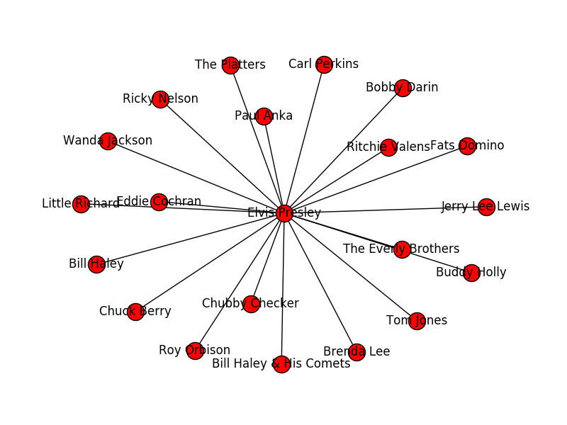
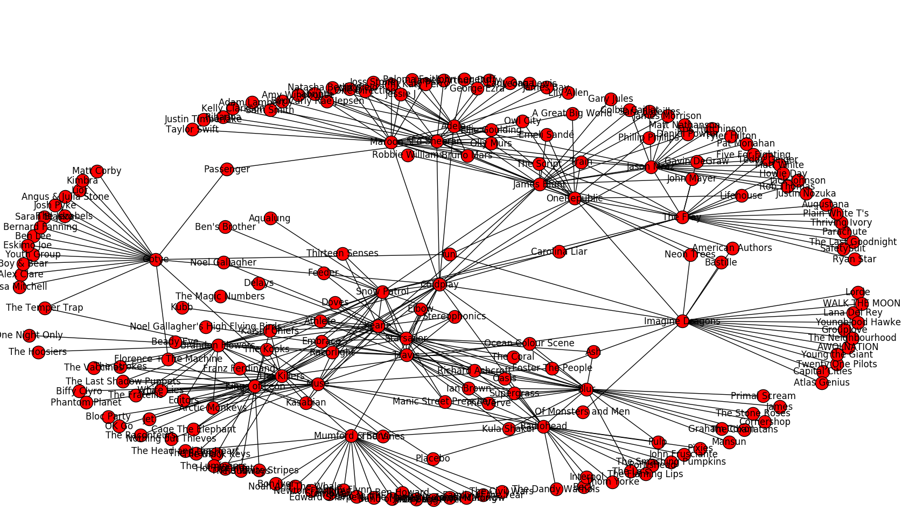
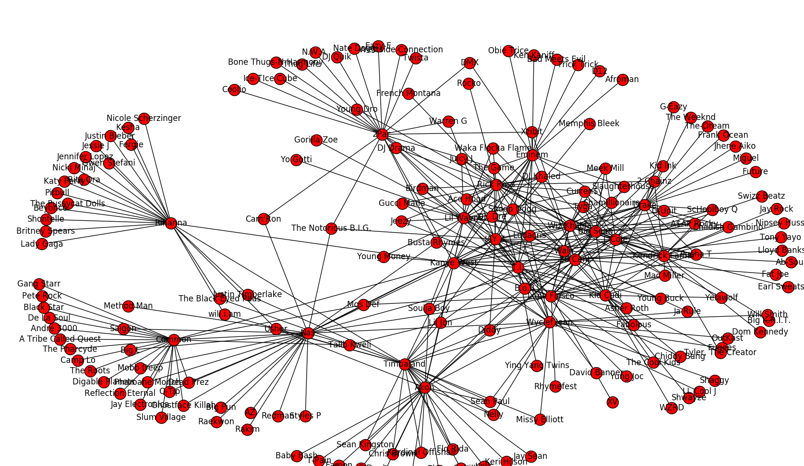

Welcome to the first post of my blog. To begin, I am going to touch on a particular interst of mine, music.
I have always been passionate about music, playing an instrument when I was younger and making some electronic music now. This project was inspired after I read an article posted on Brady Fowler's music data blog . His work looked to analyze how Spotify classifies music by genre. Hoping to gain experience with python, Spotify API, and d3.js, I set out to create my own project.
This first obstacle was obtaining the data. I used the Spotify Endpoint API to obtain information about the particular artist. Using the json and urrlib2 python libraries, I was able to parse the data into a particular Arist class:
class Artist:
def __init__(self, id):
self.id = id
self.name = ''
self.followers = ''
self.popularity = ''
self.related_artists = [ ]
self.get_artist()
self.get_related_artist()
def get_artist(self):
getArtist = "https://api.spotify.com/v1/artists/" + self.id + "/"
obj = urllib2.urlopen(getArtist)
artistInfo = json.load(obj)
self.name = artistInfo['name']
self.followers = artistInfo['followers']['total']
self.popularity = artistInfo['popularity']
def get_related_artist(self):
url = "https://api.spotify.com/v1/artists/" + self.id + "/related-artists"
json_obj = urllib2.urlopen(url)
data = json.load(json_obj)
for item in data['artists']:
self.related_artists.append(str(item['id']))
After I was able to store all of the relevant data in class, I created a function to traverse the list of related artists that were returned, and create a new list of artists. I took advatange of the python package NetworkX to create a graph representation (with nodes and links):
def createGraph(artist, graph):
for relatedID in artist.related_artists:
#create a new artist
related_artist = Artist(relatedID)
Z.add_node(related_artist.name, popularity = related_artist.popularity, followers = related_artist.followers)
Z.add_edge(artist.name, related_artist.name)
So, when I went to create a graph for a particular artist, I would first call createGraph, and then go through all of Kanye West related artists and repeated the process:
createGraph(kanye, Z)
for iD in kanye.related_artists:
test = Artist(iD)
ArtistArray.append(test)
createGraph(test, Z)
It's relatively easy to plot the network graph using matlibplot:
nx.draw(Z, with_labels = True)
plt.show()
I drew my first graph for Elvis Presley with only one degree of related artists. 
After implementing the loop that traverses through the related artists and adds another degree, I created one for  and 
I was not particularly satisfied by how the visualization looked with the built in graph. Also, I was hoping to gain experience with a D3.js so I worked to create a force-directed graph. I had to export the data as a json file and was then able to read in the json through d3. Pelican has difficulty rendering the graph so I have hosted it on blocks and you can view it Here . I found this method of visualization much more clear and interesting. Furthermore, there is additionally functionality as you can click on a node and it highlights the surronding neighbors. I am currently working to add more features such as search and click to learn more info so stay posted. Thanks for reading!